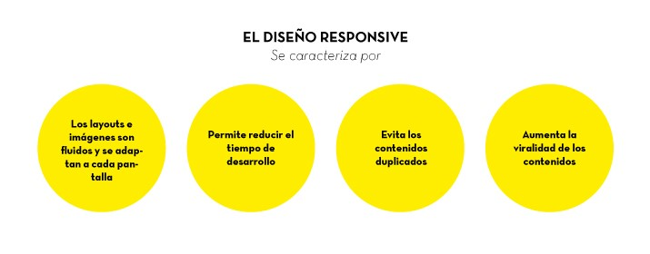
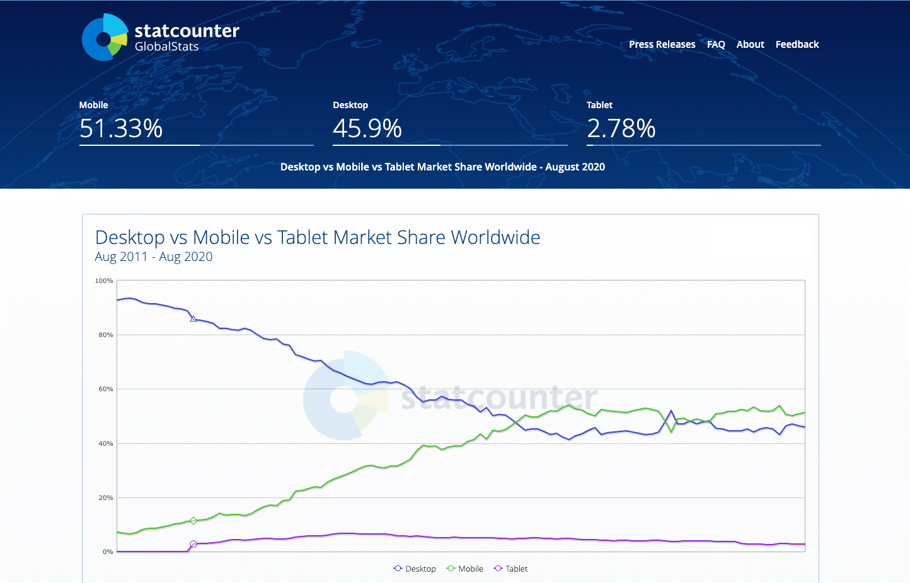
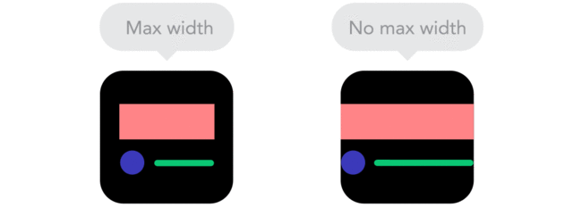
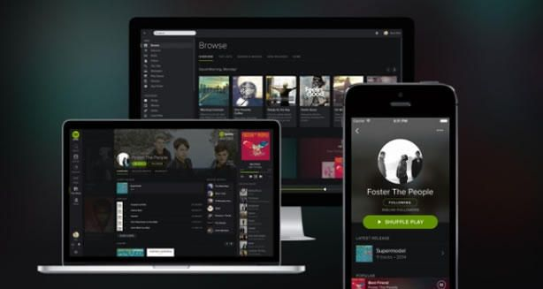

Antes de la llegada de los smartphones y las tablets, una web solo se podía visualizar en una pantalla conectada a un ordenador, por lo que con diseñarla para verse bien en ellas era suficiente. Con la llegada estos dispositivos todas las webs han tenido que adaptarse a los pequeños tamaños de sus pantallas.
La versión de escritorio de una web se ve muy pequeña en un teléfono móvil, además de que en algunas ocasiones se carga demasiado contenido, ralentizando la velocidad carga cuando se abre desde un smartphone y consumiendo demasiados datos de internet.
¿Qué es el diseño responsivo?
El diseño responsivo es aquel que permite la correcta visualización de una página web en cualquier dispositivo, sea cual sea el tamaño de su pantalla.
Pantallas de diferentes dispositivos.
El objetivo del diseño responsivo es crear páginas web que detecten el tamaño y la orientación de la pantalla del visitante y cambien el diseño en consecuencia.
Origen del término Responsive Web Design
El diseñador que acuño el termino de “resposive Web Design “fue Ethan Marcotte que publico un post en “List Apart” y un libro donde explicaba todas las circunstancias y técnicas relacionadas con el diseño adaptable. Aunque es cierto que no fue el primer diseñador que pensó en la necesidad de adaptar el layout de las webs a las diferentes pantallas (de hecho, los creadores del estándar CSS ya habían creado tecnologías para producir sitios adaptables), sí fue el primero en usar ese término que hoy es tan popular.
¿En qué consiste el diseño responsivo?
Se trata de redimensionar y colocar los elementos de la web de forma que se adapten al ancho de cada dispositivo permitiendo una correcta visualización y una mejor experiencia de usuarios. Se caracteriza por que los layouts (contenidos) e imágenes son fluidos y se usa código media-queries de CSS3.
El diseño responsivo permite reducir el tiempo de desarrollo, evita los contenidos duplicados, y aumenta la viralidad de los contenidos ya que permite compartirlos de una forma mucho más rápida y natural.

Características del diseño responsivo
Ventajas de usar el diseño responsivo
Mejora la experiencia de visualización de sus visitantes del sitio web en móviles y tabletas – se elimina el desplazamiento vertical u horizontal.
No hay necesidad de diseñar y mantener sitios web por separado para usuarios móviles.
Los diseños adaptables (fluid grids) funcionan como una extensión de los templates líquidos (liquid layout) - aunque de una forma más robusta, adaptando los distintos elementos a grandes y pequeñas pantallas sin problema.
Estilo separado del contenido – Dado que el diseño web responsivo trabaja a través de CSS media queries, usted puede tomar ventaja de las capacidades de gestión de contenidos de su CMS favorito. Nosotros nos especializamos en sitios responsivos diseñados bajo la plataforma Joomla.
¿Por qué es importante el diseño responsivo?
Porque ya no es suficiente para diseñar para un solo dispositivo. El tráfico web móvil ha superado al escritorio y ahora constituye la mayoría del tráfico del sitio web, que representan más de 51%.

Mobile, tablet, desktop market share
Hoy en día, el numero de personas que navegan por internet desde el móvil es superior al numero de personas que lo hacen desde el ordenador, por lo que una web que no tenga un diseño responsivo tiene pocas posibilidades de “sobrevivir” en un escenario así.
Si un usuario entra en una página que no está adaptada a móviles, lo mas probable es que busque otra que si lo este porque es mucho más fácil encontrar la información que está buscando. Por otra parte, si quieres cuidar el SEO de tu web, ya que Google penaliza a las webs que no están preparadas para esta nueva era, precisamente por la mala experiencia de usuario que conlleva una web así. Por lo tanto, si quieres competir con el resto de webs que están luchando por los primeros puestos en Google, necesitas tener un web responsivo sí o sí.
Diseño Web Responsivo vs Diseño Adaptado
La diferencia entre el diseño responsivo y el diseño adaptable es que el diseño responsivo adapta la representación de una versión de una sola página. Por el contrario, el diseño adaptativo ofrece varias versiones completamente diferentes de la misma página.
Responsive vs adaptive design
Ambas son cruciales tendencias del diseño web que ayudan a los web masters a controlar como se ve su sitio en diferentes pantallas, pero el enfoque es diferente.
Con el diseño responsivo, los usuarios accederán al mismo archivo básico a través de su navegador, independientemente del dispositivo, pero Código CSS controlará el diseño y lo renderizará de manera diferente en función del tamaño de la pantalla. Con el diseño adaptable, hay un script que comprueba el tamaño de la pantalla y, a continuación, accede a la plantilla diseñada para ese diseño.
¿Qué hay que tener en cuenta para trabajar en diseño responsivo?
Debemos trabajar con unidades relativas e intentar evitar las unidades fijas o estáticas.
Utilizar propiedades como min-width o Max-width, donde definimos tamaños mínimos o máximos, para que los elementos puedan ampliarse o reducirse según sea necesario.
Mantener el flujo de los elementos cuando cambian de tamaño y evitar que estos se solapen unos con otros.
Utilizar Puntos de control. Por ejemplo, se suele pensar que en una resolución de escritorio queremos mostrar la información dentro de una cuadrícula (grid) de 4 ó 5 celdas de ancho, mientras que en la versión de Tablet será sólo de 3 celdas de ancho (el resto se desplazará a la siguiente fila) y en móviles será una sola celda de ancho, mostrándose el resto de celdas haciendo scroll hacia abajo:
A continuación, veremos algunos ejemplos de diseño responsivo de diferentes industrias.
Periódico en línea: New YorK Times
New York Time en dispositivos móviles, tabletas y portátiles.
Comercio electrónico: Amazon
Amazon en dispositivos móviles, tabletas y portátiles.
Sitio de video: YouTube
Youtube en dispositivos móviles, tabletas y portátiles.
Sitios de música: Spotify

Spotify en dispositivos móviles, tabletas y portátiles.